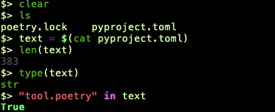
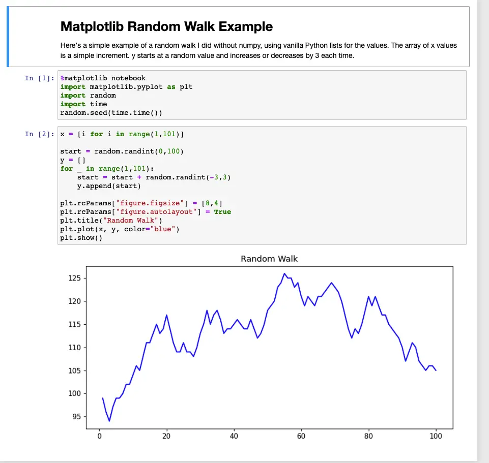
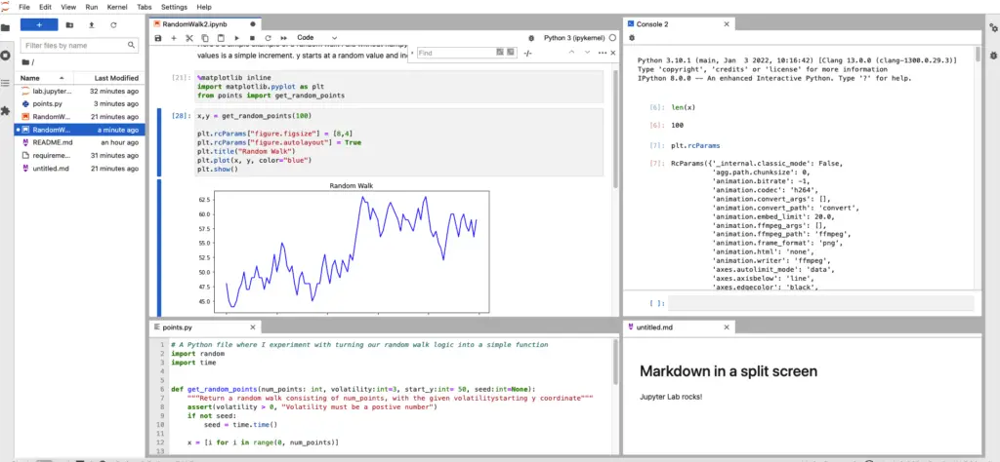

Is Python Free? Yes, it is, Python is free and open source and has been from the beginning. It’s also cross-platform, and works fine on Windows, Linux, and Mac. But the really cool thing about Python is that not only is the language free, many of the tools you will use are free as well.
Unlike languages like C# and Swift, where the choice of the language tells you a lot about what tools you’re likely to end up using, with Python, there’s a huge array of tools that work across multiple platforms. So overall, that’s a good thing, but there is a slight problem.
The problem is that, with so many free tools available, another question you might ask is which of these tools are best? But the answer to that question in turn really depends on what you mean by “best”.
The Answers¶
But enough about the questions. Let’s start digging into the answers.
My goal in this article is to list mainly those tools that fall into one or more of the following categories:
Those I’ve used personally and can recommend one way or the other.
Tools I’ve written about already or think are cool enough that I plan to write about them.
For the machine learning topics especially, tools that I’ve only learned a little about so far but that I’m planning to work with more in the months ahead.
In addition to focusing to a large extent on tools I’ve used myself, we’ll also be paying special attention to areas like data science, machine learning, and cloud computing where Python dominates the industry.
This article will cover a lot of different areas, but that’s for completeness. It’s not meant to be a to-do list for anyone. For my part, I love writing and learning about Python tools. If you’re not a fanboy like me, that’s totally fine – feel free to skim down to the interesting parts.
This article lists the best tools for learning Python and for various development tasks you might have. We do this by category, so you can quickly scan to what you need.
Table of Contents
The Answers
Python IDEs and Managing Python Versions
Top IDEs for Beginners
Other Tools for Running and Developing in Python
Notebook Style Tools for Data Science
Python Testing Tools
Python Tools for Data Science
Python Scientific and Machine Learning Tools
Tools for Cloud Computing
Tools for Web Development
Package Tools and Virtual Environments
Python Tools for General Scripting and Automation
Final Thoughts
Python IDEs and Managing Python Versions¶
We discuss our two favorite choices for Python Integrated Development Environments (IDEs) in our article, PyCharm vs. VS Code. For the VS Code option, there are many extensions to support Python development. A great way to install several core plugins at the same time is through Don Jayamanne’s Python Extension Pack extension. For PyCharm, no further plugin installs are needed for Python development.
For both tools, however, you’ll need to have available a Python distribution. I usually install the latest version I can find. However, if you find yourself with a need to manage more than one version (to work on different projects, for example), we really like the pyenv tool for managing multiple versions. We published an article on Installing Pyenv on a Mac recently. Some information there will work in any environment, but Windows users will also want to consult the installation instructions in the pyenv for Windows project.
Top IDEs for Beginners¶
If you are brand new to Python and just want to try things out before installing an IDE, there are a couple of tools you can try. (Shout out to one of my avid readers for reminding me of these). One tool that I’ve used a little and recommended to some newcomers myself is IDLE. IDLE is a lightweight Python editing environment that ships with Python itself. This is a great example of a principle that the Python standard library documentation mentions: “Python has a ‘batteries included’ philosophy.” If you have Python installed, just type idle3 (or “idle”, depending on your distribution) to get started with IDLE.
Another lightweight IDE you might try is Thonny, the “Python IDE for beginners”. I recently installed it to see if it was available for newer Macs running Apple Silicon chips instead of Intel, and it installed fine from the package download. (The brew version didn’t work for me). Thonny has great beginner-friendly features such as a detailed, step-by-step debugger to show program execution and a graphical package installer.
Other Tools for Running and Developing in Python¶
In the last sections, we went over a few of the more popular IDE options that are available. However, there are other great choices for running Python code, depending on your needs. All of them enable quick, interactive experiments that can later be added to longer scripts. Some examples of tools in this area are the following:
Python’s default shell (what you get if you type “python” with no script file) is a great starting place for quick snippets of code.
IPython, which can be installed with “
pip install ipython”, is an interactive shell that adds several “magic commands” which provide additional features. For example, from within the shell, you can use “%edit <filename>” to quickly open the default text editor on your system for a given file. You can also create aliases for commonly used commands, or list the built-in aliases, which are displayed using the “%alias” magic command. I love working at the command line, and when I first learned IPython, I was so intrigued by it that I made a solemn vow to use it for everything forever. Unfortunately, it wasn’t solemn enough, apparently, since I’ve since defaulted to just using the system shell plus the “plain” Python shell for many such tasks.Well, fear not – perhaps I’ll have better luck with a tool with an uglier name. That tool is one that provides even greater Python and shell integration than IPython. It’s called xonsh, and it was recommended by a colleague of mine. In xonsh, as in IPython, it’s trivial to mix Python expressions and bash commands. To give you just a small taste of that, let’s set a variable Python to the contents of a file that we get using “bash”, and try some Python commands with it.

Notebook Style Tools for Data Science¶
I’m sure any data scientists who read the last section on tools you can use to run Python are saying, “Hey! When are you going to get around to mentioning Jupyter Notebook and Jupyter Lab?” Well, here we go, and sorry to keep you waiting.
Jupyter Notebook began its life as IPython Notebook, which partly accounts for IPython’s popularity. What is Jupyter Notebook, in a few words? It’s an awesome tool for mixing Python, Markdown, and Graphical Libraries (think histograms and other data plots), all within your browser.
To whet your appetite, here’s a Jupyter Notebook I whipped up that does a random walk in Python and graphs it using matplotlib. The screenshot is below, but here’s the notebook source.

If Jupyter Notebook was just “kinda cool”, Jupyter Lab is “too cool for school”. (These are technical terms of art in the Python world).
Here’s a Jupyter Lab screenshot I did showing, clockwise from the top right:
A new version of the RandomWalk sample from Jupyter Notebook, shown above. This version splits the random point generator into a function that it imports from a file.
A Python console that I’ve linked to the same Python kernel as the one the notebook is running. I can examine one of the arrays that’s returned and the values we’re passing to matplotlib, for example.
The points.py file with the get_random_points method, which I created from the original notebook here in the browser. This let me test that it was working by displaying the graph.
A bit of Markdown preview just for fun, to show off that we can edit and preview Markdown too in the same environment.

Jupyter Lab Screenshot showing a notebook, a Python console, Python module, and a Markdown file preview.
Python Testing Tools¶
In keeping with its “batteries included” philosophy, the Python standard library includes the “unittest” package you can use for testing. (For those of you who are new to Python, being included in the standard library means you can simply put “import unittest” in a file to get started using it – you don’t need to install a package using pip.)
Those of you who are coming from another language may find the unittest package straightforward to use. Since it was inspired by JUnit, many of the concepts are identical. You create a set of tests by creating a class derived from “unittest.TestCase”, and then add your asserts to the methods of the class. When your asserts evaluate to true, the test passes. Asserts that evaluate to false mean the test failed.
Here’s a quick example:
import unittest
class TestProgrammerRemembersFirstGradeMath(unittest.TestCase):
def test_basic_math(self):
self.assertEqual(2 + 2, 4)
Since the unittest package comes with the standard library, it’s easy to get started with it. In contrast, having to import unittest, encapsulate tests in a class, and use the TestCase class’s assert methods can get a little wordy and unwieldy. This is one of the reasons why the professional teams I’ve worked on have all used pytest for our testing. Pytest is a third-party package, so you’ll need to install it with pip. Once you’ve done that, the tests themselves become much simpler and easier to write, with vanilla Python methods and Python’s built-in assert statement Here’s the entire test file above rendered in pytest:
def test_basic_math():
assert 2 + 2 == 4
You can always group your tests into classes, too, if you have a need to do so, but I’ve often found that having a structure like the one shown below works out fine and is sufficiently self-documenting:
src/my_module.py
test/test_my_module.py
Whether you use Python’s built-in unit tests or pytest, many developers still rely on Python’s “unittest.mock” package for mocking and patching. If you’re new to mocking and patching, here’s the basic idea. When testing a function, it may do things that are difficult to set up in a test server or causes side effects. For example, let’s say you have a make_purchase function that actually orders the items a user has placed in a shopping cart. You want to test how make_purchase behaves if the purchase goes through, or if it fails for some reason. (Card declined, server unreachable, etc.).
Clearly, you don’t want to test that by sending real transactions. So if the make_purchase function relies on a CreditCardProcessor object, you would mock that object with one you set up for your tests. In one test you could return a successful result to test what make_purchase does, in another you could simulate a declined credit card, etc.
There are other tools that are frequently mentioned by sites that are more focused on testing specifically, but I have not looked into these. For example, Robot Framework frequently comes up as a low-code, beginner-friendly and keyword driven framework developed in Python. I do have some experience doing REST API testing in Python. In practice, QA engineers and developers often use non-Python, graphical tools like Postman to test APIs interactively, and that works well. However, the popular Python requests library makes coding API integration tests in pytest very easy to do.
Python Tools for Data Science¶
We’ve already discussed Jupyter Notebook and Jupyter Lab, related tools for running Python and integrating documentation and plots. These tools are very popular among Data Scientists. In our examples in that section, we used the Python standard library, storing our data as standard lists, which was fine for a basic example.
However, It’s far more common in data science and other scientific applications to use NumPy, which supports large, efficient n-dimensional arrays written in highly optimized C code, along with a variety of functions for operating on such structures. NumPy’s User Guide summarizes the available functions as providing “fast operations on arrays, including mathematical, logical, shape manipulation, sorting, selecting, I/O, discrete Fourier transforms, basic linear algebra, basic statistical operations, random simulation and much more.”
Another widely popular package that’s built on top of NumPy is Pandas. Pandas wraps several useful containers around NumPy arrays, the most useful of which is a DataFrame, which functions in some respects like a programmable spreadsheet. You can run fast numerical and statistical operations on the columns. You can subset DataFrames by selecting rows or columns out of it, and import and export the data from various formats including CSV, JSON, or SQL data sources. Though Pandas provides native support for indexing and selecting columns or rows, users who are more familiar with SQL can add the pandasql package to query pandas DataFrames as they would a database table.
Rounding out the “core” Python data science tools are two major libraries for plotting data, matplotlib (which we’ve already encountered) and seaborn, which is a data visualization library based on matplotlib.
Python Scientific and Machine Learning Tools¶
Beyond the basic stack, there are other tools for general mathematics on the one hand, and machine learning applications on the other. For those of you who love the functionality of Matlab but aren’t so keen on the high price, there’s SageMath, a free open source software package for general mathematics. Although programmable in Python, SageMath is also in some sense an application, with a Web-based Notebook interface. One of the libraries on which it is built, SciPy, which is a high-performance general mathematics library.
In addition to general mathematics tools, Python boasts several popular machine learning tools. A word of caution is in order as we begin this section, however. Although when we discuss machine learning, it’s true that the basic tools are free. However, doing machine learning can get to be expensive, both because the algorithms thrive on large data sets, and analyzing large data sets at scale may incur some costs. That said, the tools themselves are free, so let’s get into that discussion next.
One tool that’s been around for some time and is still widely used in many competitions is scikit-learn. Scikit-learn is built on tools we’ve already discussed – NumPy, SciPy and matplotlib, and provides good support for preprocessing, classification, regression, and clustering problems. A newer but similar general machine learning tool is TensorFlow. Of the two, scikit-learn is easier to use and is a favorite of beginners, while TensorFlow permits running distributed Machine Learning tasks across large-scale GPU clusters.
To simplify deep learning applications, Keras is a Python deep learning framework built on TensorFlow, which combines TensorFlow’s scalability with a simplified API. Another tool in this space is PyTorch, which has grown in popularity in the last two years or so, eclipsing TensorFlow, especially for research. An excellent summary of the current state of the art is Ryan O’Connor’s PyTorch vs TensorFlow in 2022.
Tools for Cloud Computing¶
I first started to take the cloud seriously as something I should learn about around 2014 or so. At the time, I was working on applications that were largely still hosted “on-premise”, that is to say, on data centers owned by the company they serve. I was working in Java, and as had been the practice for many years, servers running Java web applications were running either on virtual machines or directly on servers, typically fronted by a load balancer.
Since then, the folks using Java Spring and other monolithic frameworks like ASP.net have since largely migrated to either cloud-hosted virtual machines or to Docker containers running in some container orchestration and clustering tool like Kubernetes or ECS.
As cloud computing became more popular, however, Python developed a new advantage over these compiled languages. It became the language of choice for doing cloud automation using “Serverless” technologies – i.e., running tasks or APIs as needed for a few fractions of a second at a time using technologies like AWS Lambda functions. The tool I’m most familiar with in this space and have worked with extensively recently is Boto3, AWS’s Cloud SDK for Python. Boto3 is an important example of Python’s role as a “glue” language. It can be used to do a huge variety of tasks within the AWS ecosystem, anything from working with files on an S3 bucket to reading and writing to AWS’s no-SQL data store, DynamoDB.
Of course, all other major cloud providers have analogs to Boto3. Taken together, I believe this whole field provides the second major use case after data science and machine learning that accounts for Python’s rising popularity.
Tools for Web Development¶
If Python is the star player of the fields of data science and cloud computing fields, it is far less dominant as a web development platform. That said, there are at least two good backend web frameworks in Python, Django and Flask. Django is the more opinionated of the two, and contains an SQL ORM (object-relational mapping) layer, a built-in admin interface, authorization and authentication, and many other features as part of the framework. Flask, on the other hand, is a more lightweight tool that handles basic HTTP requests and responses. It can be extended with additional features provided either as third party libraries or as middleware (software that intercepts the request or response flow and provides additional features).
Django and Flask are both great tools, so their low market share compared to other frameworks is unfortunate.
Package Tools and Virtual Environments¶
Python’s built-in tool for package management, pip (the “package installer for Python”) is what I use for almost all of my package installation needs. Together with Python’s venv module, which creates virtual environments, it’s straightforward to create and manage isolated environments and install packages into them. There are tools to make it simpler, but as we argue in our Pip vs. Pipenv article, not everything that’s newer is better. (In addition to comparing the two tools, that article also has a good introduction to the core Pip commands and venv commands that I depend on.)
One tool in this category where newer may, indeed, be far superior is Poetry. Every time I have picked up this tool, I’ve been most impressed by it. Poetry handles virtual environments and package installation more elegantly than pipenv, and although it shares pipenv’s default of storing the virtual environment in some non-local directory, it does allow for an easier configuration setting to override this. I believe on the package creation and publication side, it simplifies things even further. I recently wrote about the established tool in this space (Setuptools) in my article, Python Package Example: Setuptools article. Much as I enjoyed describing that process, I think Poetry makes doing this task much simpler, and I look forward to outlining it in depth soon.
In addition to the dominant players, setuptools and Poetry, there are other tools in the python package publication space that have gained somewhat less traction. I haven’t yet worked with these, but for by way of honorable mention, let me name-drop Bento and Flit, which were mentioned in PEP 517 (part of the process that made Poetry possible).
Whew! That’s a lot about package managers. Thanks for hanging in there.
Python Tools for General Scripting and Automation¶
No discussion of Python tools would be complete without at least a brief mention of a use case that’s been important from the very beginning – Python as a scripting language. Python allows one to write clear and readable short scripts to handle tasks that would otherwise be written in bash or Perl.
Here we find that we can do a lot of what we need to do using Python’s standard library. In particular, the os and sys packages provide features for things like reading and writing files, and reading and writing environment variables. In addition, the shutil package provides many operations related to copying and managing files and directories.
The recommended way to run other programs is through the functions in the submodule package, especially submodule’s run function for running a process and waiting for it to return, and Popen for more advanced uses.
For parsing command line arguments, click is a popular choice. However, Python also features argparse, which is a bit more verbose to set up but is part of the standard runtime. Finally, for truly simple needs like getting the first argument after the script name, one can simply use sys.argv to get the arguments as a list.
Final Thoughts¶
As we’ve seen, the Python ecosystem is alive and well. It boasts a well-designed runtime library along with a crowded field of great development tools and third party packages. I hope you found something in this article you can use or that encouraged you to go out and code something new!